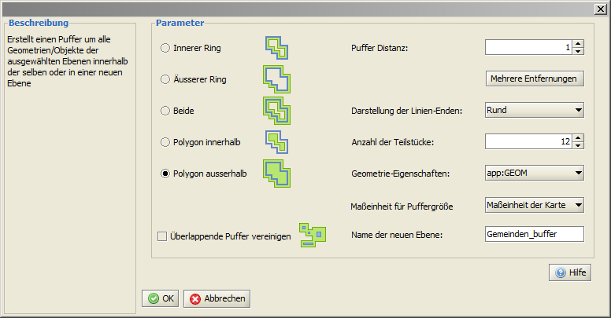

Buffer
Puffer (Buffer) können um Punkt-, Linien- und Flächengeometrien erstellt werden.
Dies kann sowohl für alle Objekte einer Ebene geschehen, als auch für ausgewählte Objekte einer Ebene.
In beiden Fällen muß vorher die zu bearbeitende Ebene in der Ebenenansicht durch Anklicken mit der linken Maustaste selektiert
werden (sie ist dann gelb hinterlegt).
Sollen um alle sich in dieser Ebene befindlichen Objekte Buffer erstellt werden, kann anschließend die Bufferfunktion aktiviert werden.
Sollen nur um bestimmte Objekte Buffer erstellt werden, müssen diese nach der Aktivierung der
Funktion Objekte selektieren noch markiert werden.
Die Bufferfunktion kann innerhalb der Menüleiste über
Werkzeuge >  Puffer aufgerufen werden. Puffer aufgerufen werden.

Je nach Datenmenge kann der Berechnungsprozess einige Zeit in Anspruch nehmen.
|